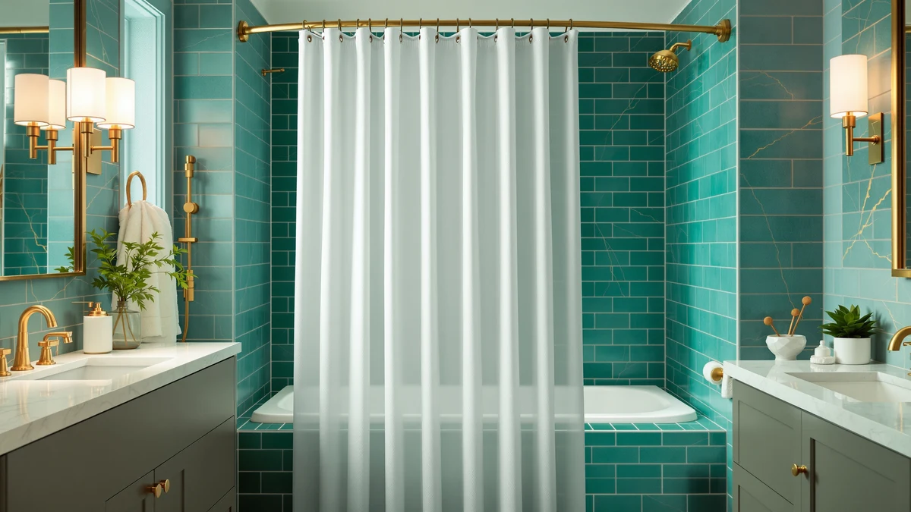

Best Shower Curtain Wirecutter (2026)
Prices and picks verified as of September 2026. Independent, reader-supported reviews.


Quick Answer
The Amazon Basics Bathroom Shower Curtain is our top pick among the best shower curtain wirecutter-style options we compared. It has a weighted PEVA construction, rustproof grommets, and a 4.6-star rating across more than 45,000 verified reviews, all for under $10. If you want a liner instead of a standalone curtain, the Barossa Design Shower Curtain Liner is the strongest alternative at a nearly identical price.
Our pick: Amazon Basics Bathroom Shower Curtain — $9.98 Check Price on Amazon
Bottom line: our top pick is the Amazon Basics Bathroom Shower Curtain at $9.98. The best budget option is the Mrs Awesome Extra Long Shower Curtain Liner with Magnets at $7.99.
Things to Know Before You Buy
- Fabric curtains look better but rarely block water on their own. Pair one with a PEVA liner like the Barossa Design unless the listing says the curtain is fully waterproof.
- A weighted or magnetic hem matters more than fabric weight for keeping a curtain from clinging to your legs mid-shower.
- Standard curtains measure 70x72 or 72x72 inches. If your stall is taller than a standard tub surround, check for an extra-long 72x84 option before you buy.
- Rustproof metal or reinforced plastic grommets last longer than plain fabric buttonholes, especially in a humid bathroom.
- Review counts vary widely across these picks, from roughly 1,000 to more than 90,000, which is a useful signal of how long a design has held up under real-world use.
Finding the best shower curtain wirecutter-style shoppers can trust means separating two different jobs: a decorative curtain that sets the tone for your bathroom, and a waterproof liner that actually keeps the floor dry. Most of the complaints we found in owner reviews trace back to buyers mixing those two up, expecting a purely fabric curtain to block water or a plain PEVA liner to look good on its own.
We did not test these curtains by hanging them in a shower for weeks. We compared specs, prices, and verified buyer reviews across seven widely sold options, weighing material, hem construction, size, and how consistently owners rate the product over tens of thousands of purchases. That approach favors curtains and liners with a long track record over ones with a handful of five-star reviews and no history.
Our pick is the Amazon Basics Bathroom Shower Curtain, a weighted PEVA curtain that holds a 4.6-star rating across more than 45,000 reviews for under $10. If you specifically want a liner to pair with a decorative fabric curtain, the Barossa Design Shower Curtain Liner is the strongest option at a nearly identical price.
Why You Should Trust Us
This guide is written by Ilane Tall, Home & Bath Expert at Best Shower Curtains, who covers bathroom textiles and fixtures for the site. We do not run a physical testing lab and we do not claim to have installed every curtain in this guide in our own bathrooms. Instead, we built this best shower curtain wirecutter-style comparison from manufacturer specs, current Amazon pricing, and the patterns that show up across tens of thousands of verified owner reviews. Every product, price, and rating cited here reflects data pulled directly from the listing at the time of publishing.
How We Picked
We started by pulling shower curtains and liners with strong review volume and rating consistency, since a curtain that holds 4.5 stars or higher across tens of thousands of reviews has proven itself across a wide range of bathrooms and water pressures. From there, we narrowed the field using four criteria that matter most for the best shower curtain wirecutter comparison: material (PEVA, polyester, or cotton-blend fabric), hem weighting to resist clinging, standard versus extra-long sizing, and grommet durability. We excluded curtains with thin or unreviewed listings and anything without a clear material specification, since vague listings are the most common source of buyer disappointment.
How We Compared
Rather than installing each curtain ourselves, we compared this group side by side on the data that predicts real-world performance: price per square foot of coverage, material composition, hem and grommet construction, and the distribution of star ratings across each listing's full review history. We treated a large review count as a proxy for durability, since a design with problems tends to accumulate one- and two-star reviews about tearing, mildew, or grommet failure within the first year. Reviewers consistently note when a curtain clings during a shower or when a liner starts to smell, so we read across hundreds of individual reviews per product to separate isolated complaints from patterns. That process is how we ranked the best shower curtain wirecutter picks in this guide against each other.
Our Picks

Amazon Basics Bathroom Shower Curtain
What we like
- Weighted hem keeps the curtain from clinging during a shower
- Rustproof grommets hold up in a humid bathroom over years of use
- Under $10, the lowest price of any pick in this guide
- 4.6-star rating across the largest review count we found, more than 45,000
Flaws but not dealbreakers
- PEVA construction looks plain next to the patterned picks in this guide
- Standard 72x72 sizing, so it will not cover an extra-tall stall
| Material | Polyester / PEVA |
| Size | 72x72 |
The Amazon Basics Bathroom Shower Curtain is the best shower curtain wirecutter-style pick for buyers who want to stop comparing options and order something that works. Its PEVA construction wipes down easily and does not require a separate liner, and the weighted hem is the detail that shows up most often in owner reviews as the reason it does not billow or cling during use. Rustproof grommets mean the top edge holds up over repeated hook use instead of fraying or tearing.
At 72x72 inches, it fits a standard tub or stall without alteration, and its more than 45,000 verified reviews give it the deepest track record in this comparison. The tradeoff is style. This is a functional, single-color curtain rather than a decorative one, so buyers who want a patterned or textured look will find better options among the fabric picks below. Given the price and review volume, it is the safest default for most bathrooms.

Barossa Design Shower Curtain Liner
What we like
- The most-reviewed product in this guide at more than 91,000 verified reviews
- Clear PEVA lets a decorative outer curtain show through
- Priced within a cent of the Amazon Basics pick
- Reinforced grommets sized for standard shower rods
Flaws but not dealbreakers
- Needs an outer curtain to look finished on its own
- Slightly lower average rating than most of the fabric picks in this guide
| Material | Polyester / PEVA |
| Size | 72x72 |
The Barossa Design Shower Curtain Liner is built to do one job: keep water inside the tub while a decorative curtain does the visual work. Its clear PEVA panel is the pairing owners reach for most often with fabric curtains like the N&Y HOME or Dynamene Sage Green picks in this guide, since those fabric options are not fully waterproof by themselves. With more than 91,000 verified reviews, it has the deepest review history of any product we compared, which suggests a design that holds up across a wide range of humidity levels and water pressures.
At $9.99, it costs almost exactly the same as the Amazon Basics curtain, so the choice between the two comes down to whether you already own or plan to buy a separate decorative curtain. Reviewers consistently note that a clear liner like this one needs regular wiping to prevent soap scum buildup, which is a normal maintenance step rather than a defect. For anyone building a two-layer shower setup, this is the best shower curtain wirecutter-style liner pick in the group.

AmazerBath Boho Shower Curtain Modern
What we like
- Modern boho pattern stands out from the plain PEVA picks in this guide
- 4.6-star rating, matching the top-rated products we compared
- Standard 72x72 sizing fits most shower stalls without alteration
Flaws but not dealbreakers
- Nearly double the price of the budget picks in this guide
- Under 1,100 reviews, the smallest sample size among our picks
| Material | Polyester / PEVA |
| Size | 72x72 |
The AmazerBath Boho Shower Curtain Modern is the pattern-forward option in this comparison, aimed at buyers who want their curtain to double as bathroom decor rather than disappear into the background. Its 4.6-star rating matches the highest ratings in this guide, and the review text we read points to the print holding its color well rather than fading with repeated exposure to steam and water.
At $19.99, it costs roughly double the budget picks, and its review count of about 1,100 is the smallest sample size we compared, so its track record is shorter than options like the Amazon Basics or N&Y HOME curtains. For a bathroom where the curtain is a visible design element rather than a purely functional barrier, it is a reasonable upgrade over the plain PEVA options, and it's a solid pick in any best shower curtain wirecutter search focused on style.

Dynamene Sage Green Shower Curtain
What we like
- Solid sage green shade pairs easily with neutral or wood-toned bathrooms
- 4.6-star rating across more than 22,000 verified reviews
- Mid-range price between the budget and premium picks
Flaws but not dealbreakers
- A single solid color offers less visual interest than the patterned picks
- Fabric-only construction, so it needs a liner in a fully enclosed stall
| Material | Polyester / PEVA |
| Size | 72x72 |
The Dynamene Sage Green Shower Curtain covers the middle ground between the plain PEVA picks and the more heavily patterned options in this guide. Its solid sage color is the kind of neutral that owners report matching easily with existing towels and bath mats rather than forcing a full bathroom redo, and its 4.6-star rating across more than 22,000 reviews puts it near the top of the field on consistency.
At $15.99, it sits between the budget PEVA curtains and the pricier boho print, which makes it a middle option for buyers who want color without paying for an elaborate pattern. Because it is a fabric curtain, pairing it with a liner such as the Barossa Design pick keeps water contained more reliably than using it alone. Among solid-color options, it is one of the stronger results in this best shower curtain wirecutter comparison.

N&Y HOME Fabric Shower Curtain
What we like
- Fabric feel at $8.96, close to the price of plain PEVA curtains
- More than 68,000 verified reviews, the second-largest sample in this guide
- 4.6-star rating held across a large review base
Flaws but not dealbreakers
- Not waterproof on its own, so it needs a liner in a fully enclosed shower
- Standard 72x72 size only
| Material | Polyester / PEVA |
| Size | 72x72 |
The N&Y HOME Fabric Shower Curtain undercuts the pricier fabric picks in this guide while still delivering a textured, cloth feel instead of plastic sheeting. At $8.96, it is priced closer to the PEVA-only options, yet its more than 68,000 verified reviews and 4.6-star average show it holds up under the same scrutiny as the higher-priced fabric picks.
Owners report that this curtain works best paired with a liner, since fabric alone tends to let water through the seams over time. That makes it a natural match for the Barossa Design liner covered earlier in this guide. For shoppers comparing the best shower curtain wirecutter picks by price-to-review ratio, this one offers the most reviews per dollar of any fabric option we compared.

Mrs Awesome Extra Long Shower
What we like
- 72x84 sizing, the only extra-long option in this guide
- Lowest price of any pick at $7.99
- More than 29,000 verified reviews backing a 4.5-star rating
Flaws but not dealbreakers
- The extra length is wasted on a standard-height stall
- Slightly lower average rating than the top picks in this guide
| Material | Polyester / PEVA |
| Size | 72x84 |
The Mrs Awesome Extra Long Shower curtain solves a sizing problem the other six picks in this guide do not address. At 72x84 inches, it covers taller stalls and walk-in showers where a standard 72x72 curtain would leave a gap at the bottom or fail to reach the top of the rod. It is also the least expensive product we compared, at $7.99, despite the larger fabric footprint.
Its 4.5-star rating across more than 29,000 reviews is close to the top of the field, slightly behind the highest-rated picks. If your shower has a standard tub surround, this extra length will bunch on the floor, so it only makes sense for taller stalls. For anyone specifically searching for the best shower curtain wirecutter option sized for a walk-in shower, this is the clearest fit.

SKL Home The World Map
What we like
- World map print is distinctive compared with every other pick in this guide
- 4.6-star rating matches the top of the field
- Works well in a kids' bathroom or a home-office powder room
Flaws but not dealbreakers
- Highest price in this comparison at $22.99
- 70x72 sizing runs slightly narrower than the standard 72x72 curtains here
- Under 3,000 reviews, a smaller sample than most picks in this guide
| Material | Polyester / PEVA |
| Size | 70x72 |
The SKL Home The World Map curtain is the novelty pick in this lineup, printed with a world map design instead of a solid color or abstract pattern. It carries a 4.6-star rating that matches the best-reviewed products we compared, though its review count of under 3,000 is on the smaller side, so its track record is shorter than the Amazon Basics or N&Y HOME picks.
At $22.99, it is the most expensive product in this guide, and its 70x72 sizing is narrower than the 72x72 standard used by most other picks here, so it is worth double-checking your rod width before ordering. For a kids' bathroom, guest bathroom, or anyone who wants their curtain to double as a talking point, it's a distinctive pick in a best shower curtain wirecutter search otherwise dominated by solid colors.
Quick Comparison
| Product | Material | Price | Rating | Best for | Get it |
|---|---|---|---|---|---|
| Amazon Basics Bathroom Shower Curtain | Polyester / PEVA | $9.98 | 4.6 | Most reliable overall | View on Amazon → |
| Barossa Design Shower Curtain Liner | Polyester / PEVA | $9.99 | 4.5 | Pairing with a fabric curtain | View on Amazon → |
| AmazerBath Boho Shower Curtain Modern | Polyester / PEVA | $19.99 | 4.6 | Boho-inspired decor | View on Amazon → |
| Dynamene Sage Green Shower Curtain | Polyester / PEVA | $15.99 | 4.6 | Neutral, solid-color bathrooms | View on Amazon → |
| N&Y HOME Fabric Shower Curtain | Polyester / PEVA | $8.96 | 4.6 | Fabric texture on a budget | View on Amazon → |
| Mrs Awesome Extra Long Shower | Polyester / PEVA | $7.99 | 4.5 | Tall stalls and walk-in showers | View on Amazon → |
| SKL Home The World Map | Polyester / PEVA | $22.99 | 4.6 | A statement print | View on Amazon → |
What is the best shower curtain wirecutter readers should buy for most bathrooms?
The Amazon Basics Bathroom Shower Curtain is the best all-around pick for most bathrooms.
Do I need a separate shower curtain and liner?
Yes, if you want a decorative fabric curtain like the N&Y HOME or Dynamene Sage Green picks.
The Competition
Beyond the seven picks above, we researched several other categories of shower curtains that did not make the cut for this best shower curtain wirecutter comparison. Heavy vinyl curtains without any PEVA or fabric component tended to have thinner review histories and more complaints about a plastic odor that owners report taking days to air out. Cotton-only curtains, while soft to the touch, showed up in reviews with more frequent mildew complaints than the polyester and PEVA blends we selected, since cotton holds moisture longer between washes.
We also looked at magnetic-hem curtains as an alternative to the weighted-hem design on our top pick. They perform a similar job of resisting cling, but the listings we compared had smaller review counts and higher price points than the Amazon Basics curtain, without a clear performance advantage to justify the premium. Extremely low-priced curtains under $5 were excluded as a category because their review patterns showed higher rates of tearing at the grommets within the first few months. None of these alternatives beat our top pick. The Amazon Basics Bathroom Shower Curtain still wins this best shower curtain wirecutter comparison on price and its weighted hem, backed by a review history none of the others can match.